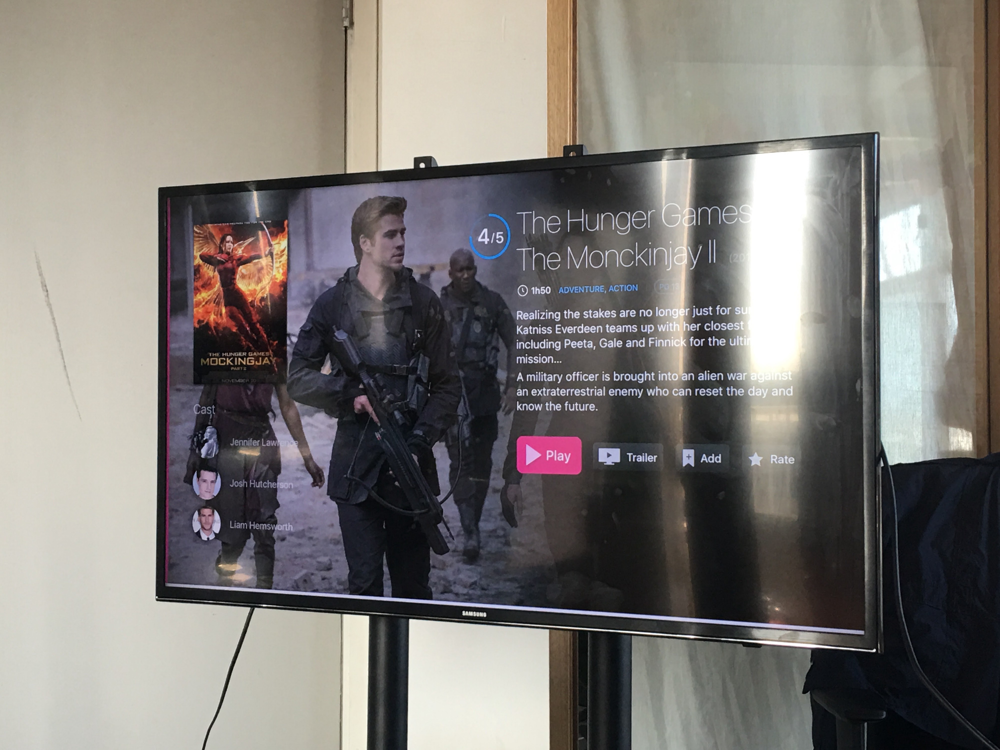
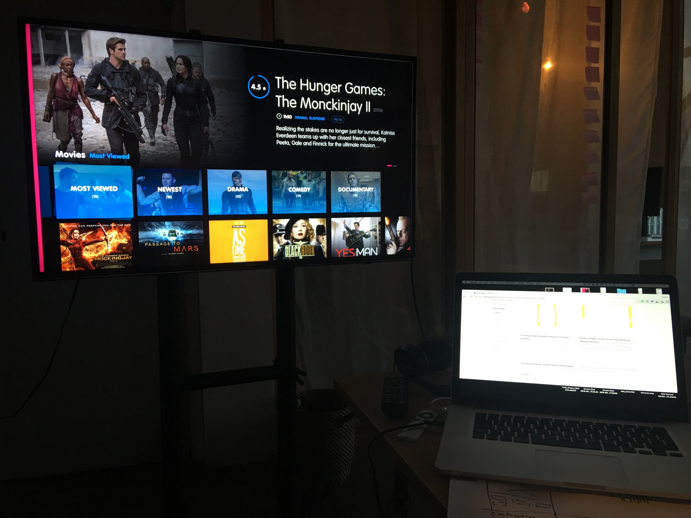
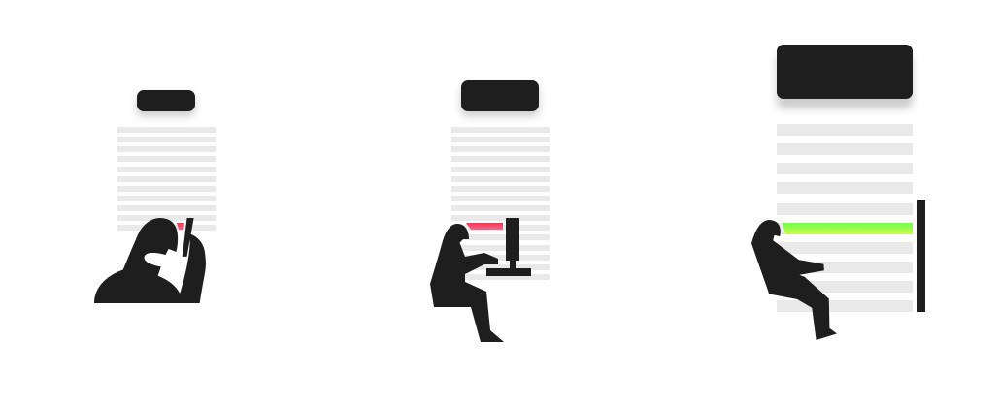

智能电视UI交互设计原则
#Smart-TV-UI就像设计一款手机App一样，设计一款智能电视App是一件即复杂又有趣的事情，这里有许多设计原则和经验可以借鉴。电视产品的使用场景是距离5米以外的距离观看，下面列出了一些设计基础原则。
大屏设计项目
你必须时刻记住，你设计的产品需要面临的复杂场景，白天屏幕上可能会有阳光反射，夜晚屏幕明暗的对比度又强烈。所以对比度和易读性是电视UI的设计关键。在设计电视UI时，请确保时刻测试字体的易读性和颜色对比。
一个比较聪明的做法是在一天的不同时间段调整电视屏幕的位置，这样你就可以测试出在阳光反射下是否能看清字体。


电视屏幕
不同于手机，电视屏幕的用户体验要求用户在5米外也能获得最佳的清晰度和易读性。
电视的分辨率和观看距离使得用户在大屏获取信息的难度比手机大。所以在设计电视UI时请尽量确保内容干净、简练，同样的功能或产品页面，在电视上展示的信息与在手机上展示的信息其实是差不多的，比在电脑上展示的信息要少。

(确保你的UI在5米距离有最佳的易读性)
安全区域
由于电视屏幕显示格式的不同，你设计的内容如果太过边缘，可能会展示不全。
谷歌TV，苹果TV，亚马逊的Fire TV都设置了不同的安全区域准则以避免内容溢出。他们都至少定义了5%的页面空白作为安全区域。